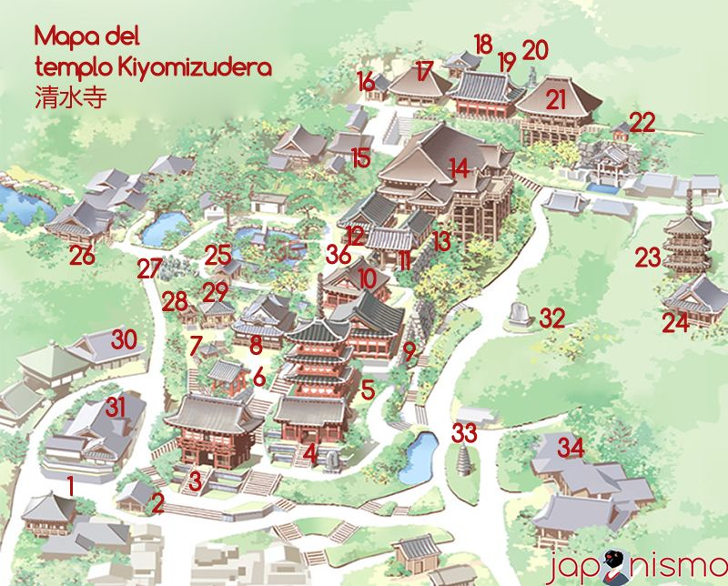
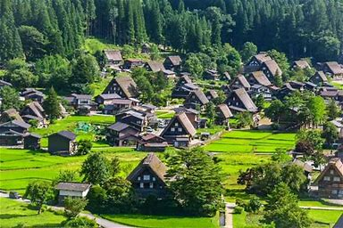
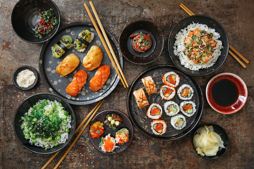

Japanese
Welcome to Discover Japan!
The first human inhabitants of the Japanese archipelago have been traced to the Paleolithic, around 38–39,000 years ago.[1] The Jōmon period, named after its cord-marked pottery, was followed by the Yayoi period in the first millennium BC when new inventions were introduced from Asia. During this period, the first known written reference to Japan was recorded in the Chinese Book of Han in the first century AD. Around the 3rd century BC, the Yayoi people from the continent immigrated to the Japanese archipelago and introduced iron technology and agricultural civilization.[2] Because they had an agricultural civilization, the population of the Yayoi began to grow rapidly and ultimately overwhelmed the Jōmon people, natives of the Japanese archipelago who were hunter-gatherers.[3] Between the fourth and ninth centuries, Japan's many kingdoms and tribes gradually came to be unified under a centralized government, nominally controlled by the Emperor of Japan. The imperial dynasty established at this time continues to this day, albeit in an almost entirely ceremonial role. In 794, a new imperial capital was established at Heian-kyō (modern Kyoto), marking the beginning of the Heian period, which lasted until 1185. The Heian period is considered a golden age of classical Japanese culture. Japanese religious life from this time and onwards was a mix of native Shinto practices and Buddhism. Over the following centuries, the power of the imperial house decreased, passing first to great clans of civilian aristocrats — most notably the Fujiwara — and then to the military clans and their armies of samurai. The Minamoto clan under Minamoto no Yoritomo emerged victorious from the Genpei War of 1180–85, defeating their rival military clan, the Taira. After seizing power, Yoritomo set up his capital in Kamakura and took the title of shōgun. In 1274 and 1281, the Kamakura shogunate withstood two Mongol invasions, but in 1333 it was toppled by a rival claimant to the shogunate, ushering in the Muromachi period. During this period, regional warlords called daimyō grew in power at the expense of the shōgun. Eventually, Japan descended into a period of civil war. Over the course of the late 16th century, Japan was reunified under the leadership of the prominent daimyō Oda Nobunaga and his successor, Toyotomi Hideyoshi. After Toyotomi's death in 1598, Tokugawa Ieyasu came to power and was appointed shōgun by the emperor. The Tokugawa shogunate, which governed from Edo (modern Tokyo), presided over a prosperous and peaceful era known as the Edo period (1600–1868). The Tokugawa shogunate imposed a strict class system on Japanese society and cut off almost all contact with the outside world.
Discovery to japan sanskiriti
Welcome to Discover Japan!
Discover Japan's Wonders
-

Temples & Shrines
Explore Japan's spiritual heritage
-

Food Culture
Taste Japan's delicious cuisine
-

Traditional Clothing
Learn about Japan's iconic kimono
Culture Details
Learn about Japan's rich cultural heritage.
Parmparik Prichay
Learn about Japan's rich cultural heritage
Tea Ceremony
A traditional ritual for mindfulness and hospitality
Kabuki Theater
A classical form of Japanese drama and performance art
Calligraphy
The art of beautiful handwriting in Japan
Food Culture
Taste Japan's delicious cuisine

Sushi
A classic Japanese dish made with vinegared rice and fresh seafood

Ramen
A popular Japanese noodle soup made with rich pork or chicken broth
Tempura
Lightly battered and fried seafood and vegetables